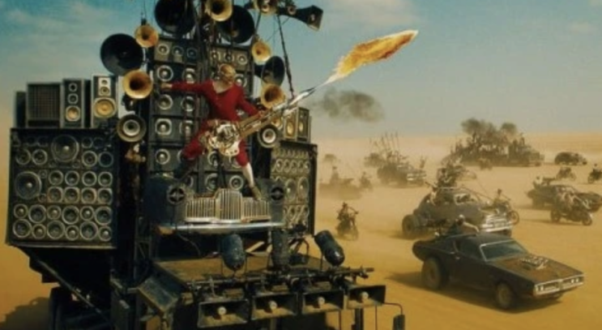
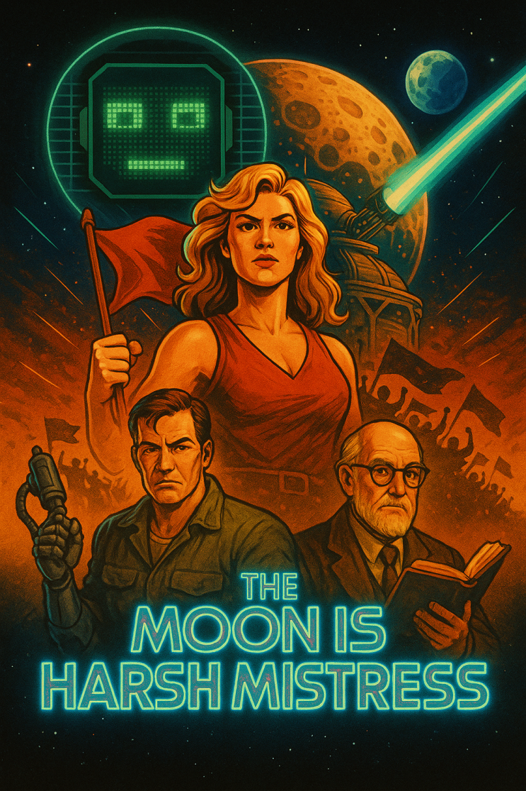

오래간만에 정말 즐겁고 유쾌한 소설을 읽었습니다.
제가 좋아하는 소설 '스타쉽 트루퍼스' 작가인 로버트 하인라인의 역작 '달은 무자비한 밤의 여왕' 을 지난 주 금요일 저녁
에 읽기 시작해서 일요일 밤 늦게 (월요일 새벽 2시까지!) 다 읽어버렸네요.
몸은 좀 피곤했지만, 헐리우드 AAAA급 액션 영화를 본 것 처럼 후련하고 재미있던 책이었습니다!
이 정도 되면 헐라우드 AAAA급 액션블로버스터임
(폴아웃이 정말 명작이었음 ㅠㅠ)
달은 무자비한 밤의 여왕 (이하 "달여왕")은 미래 달 식민지에서 일어나는 혁명에 대한 이야기 입니다.
마치 과거의 호주 처럼, 미래의 지구는 달개척이라는 목적으로 죄수들에게 자유를 주고선 달에다가 끊임 없이 버려.....아
니 개척자로 파견하게 되는데 ㅋㅋ
(아니 이건 스타크래프트 태란 아니요?)
이 와중에 대부분의 죄수들은 사망하지만 일부
죄수들이 살아남고 스스로의 독창적인 사회와 문화를 형성하고 살아남아 달은 인류의 새로운 식량생산 중심지 기능을 하
는 식민지로 번성하게 됩니다.
이 와중에 총독부 (총독부도 범죄자로 구성됨 ㅋㅋ) 에서 일하던 주인공이 총독부 컴퓨터가 자기 인식을 하게 되었다는 것
을 이해하면서 그/그녀와(이름은 마이클/미쉘) 친구가 되는데요, 얼탱이 없게 한가하게 인류 최초의 AGI와 농담 따먹기나
즐기던 주인공은, 우연한 계기로 달의 독립 세력과 접촉하게되고 시간이 흐르면서 달 독립운동의 한 복판으로 끌려들어가
게 됩니다.
그야말로 인공지능과 함께하는 21세기 체게바라가 된 것입니다.
60~70년대 SF 황금기의 세계 3대 SF 거장이라 하면 아이작 아시모프 (파운데이션 시리즈), 필립 딕 (마이너리티리포트
등), 로버트 하인라인(스타쉽트루퍼스 등) 을 보통 꼽는데요, 저는 셋 다 좋아합니다만 가장 좋아하는 사람 하나를 꼽으라
면 바로 하인리히인데요, 제가 하인라인을 좋아하는 이유는 그 필력이 정말 끝내주기 때문입니다.
글을 읽고 있다보면 정말 몇 시간이 지나갔는지도 모를 정도로 재미있게 글을 쓰는데, 완전 우와 ~ 하는 재미있는 내용입
니다.
소설의 내용은 직접 읽어보시면 좋겠고, 제가 재미있다고 생각한 포인트는 바로 달 사회의 문화였습니다.
그 중 가장 인상 깊었던 것은 달 사회인들의 친절함(?)과 여성에 대한 존중 문화였는데요. 죄수들이 모여 혼돈 파괴 망가로
사회를 발전시켰기 때문에 얼핏 생각해보면 매드맥스 같은 세상이 올 것 같지만, 의외로 서로 존중하고 예절을 지키는 사
회가 형성되었습니다. 그것은 언제든 좆같으면 상대방을 애어록 밖으로 던져버리는 행위가 빈번하다보니 (경찰이나 법원
도 없기 때문에 잡히지도 않음) 상대를 공격하거나 빈정상하게 하면 뒤질 수도 있음을 모두가 깨달았기 때문입니다.

사람들이 예상했던 달 사회
TikTok · 킥튜브 님
좋아요 7683개, 댓글 156개가 있습니다. "존중이 넘치는 UFC 명장면"
www.tiktok.com
실제 달 사회
이건 사람들이 미국에서 차를 좆같이 운전하지 않는 이유와 같은 이유입니다 ㅋㅋㅋㅋ
여성의 경우 처음엔 남여 성비가 10대 1 이하였기 때문에 사회가 여성을 차지하기 위해 죽이고 죽고 난리도 아니었지만,
시간이 흐르면서 소중한 여성들을 보호하고 공유(?) 하는 형태로 발전하였습니다. 여성들은 얼마든지 남편을 추가로 맞이
할 수 있으며 이전 남편이 할 수 있는 일은 새 남편을 받아들이고 행복을 바라며 같이 공존하는 일 뿐입니다 (그렇지 않으
면 에어록으로 가서 우주를 온몸으로 체험하게 됩니다). 그렇기에 달 세계에서 여성의 권리는 지구의 그것과 비교도 할 수
없이 높고, 주요 주인공 중 하나는 지구에서 와서 암 생각도 없이 술집에서 옆에있던 여성 분 뽀뽀한번 했다가 옆에 계시던
신사들로부터 린치를 당해 정말 뒤지기 직전까지 갑니다 (주인공이 살려줌).
기회가 되시면 다들 꼭 읽어보셨으면 하는 재미있는 소설이었습니다.
다들 즐거운 독서 되십쇼 ㅎㅎ ㅋㅋㅋ
끝.
